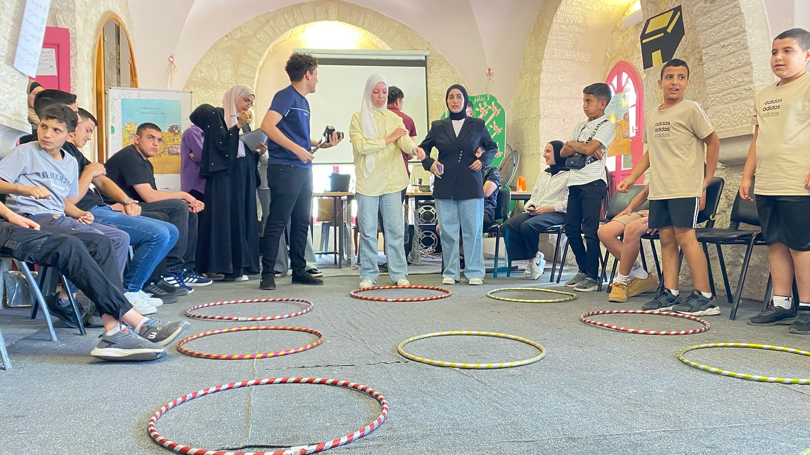
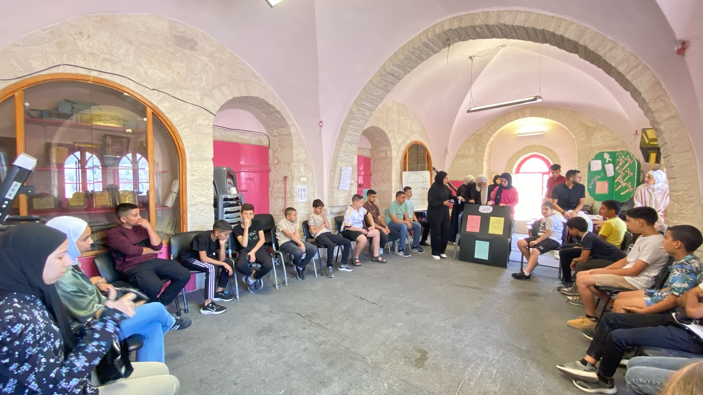
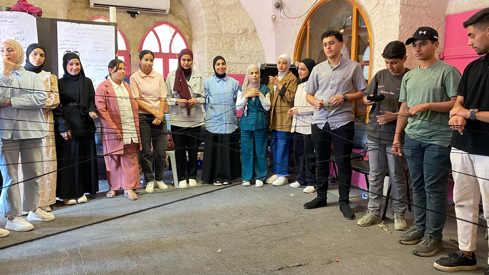
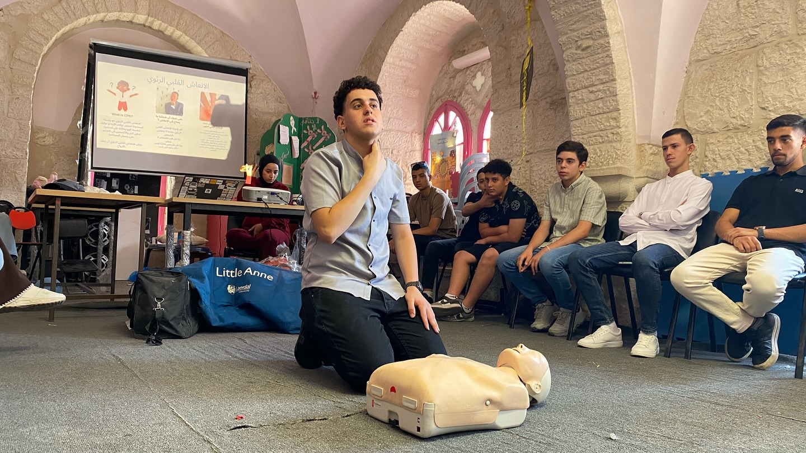
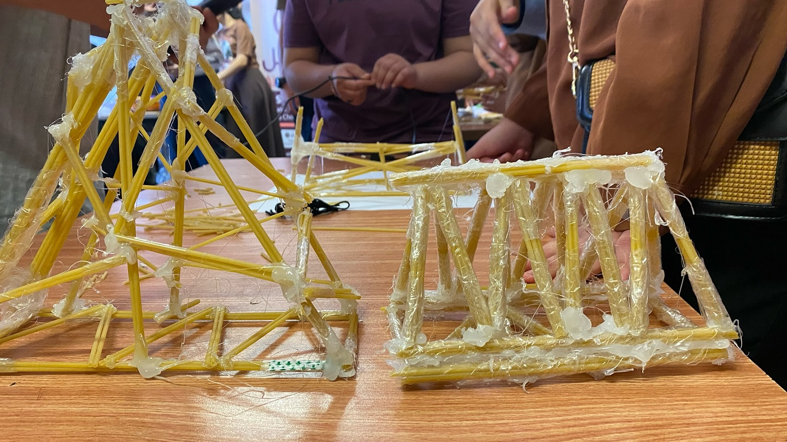

Community
A Seed of Hope
A therapeutic summer camp for more than 100 children with chronic conditions in war-affected communities.

Overview
A Seed of Hope was a peace project run with Al Sadeel Society for Palliative Care: a therapeutic summer camp for more than 100 children aged 6 to 17 who live with chronic conditions, from underserved, war-affected communities.
It was the society's eleventh summer camp, held under the slogan "We plant hope to harvest a smile", for children with cancer and diabetes. The days mixed awareness, cultural and recreational activities with group psychological support sessions, games and art, all meant to give the children a safe place to rest, play and express themselves.
What I did
- Directed the curriculum design and the project's implementation.
- Co-facilitated daily social-emotional learning activities, including drama therapy, narrative therapy and creative expression, to support emotional regulation and resilience.
- Worked with psychologists, social workers and medical staff on a holistic approach to each child's social, emotional and behavioural needs.
- Coordinated logistics, volunteers and programming as part of a six-member team managing a $10,000 budget.
Photos
Photos by Al Sadeel Society.



